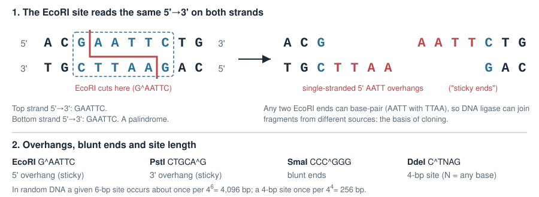
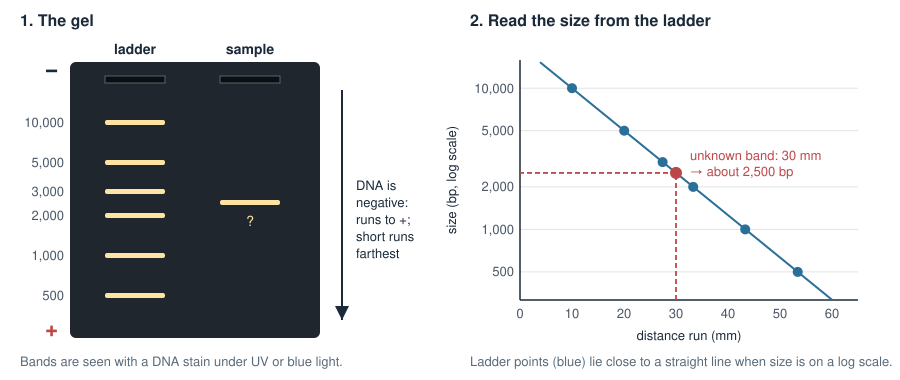
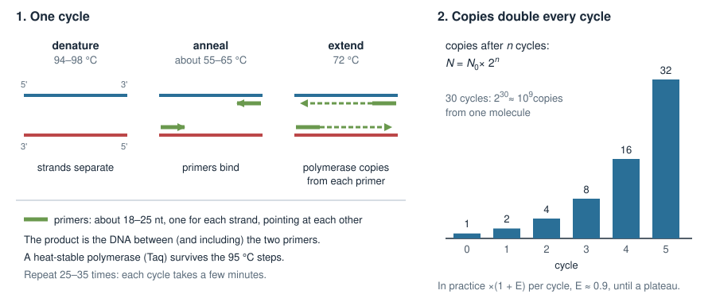
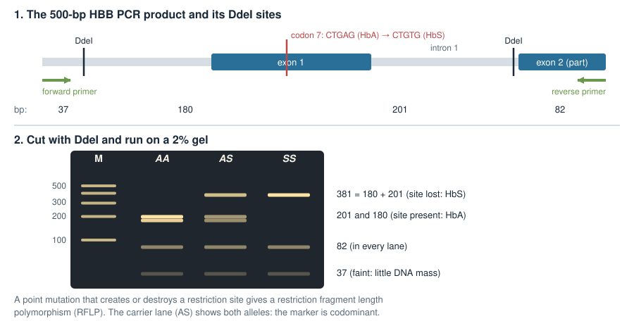
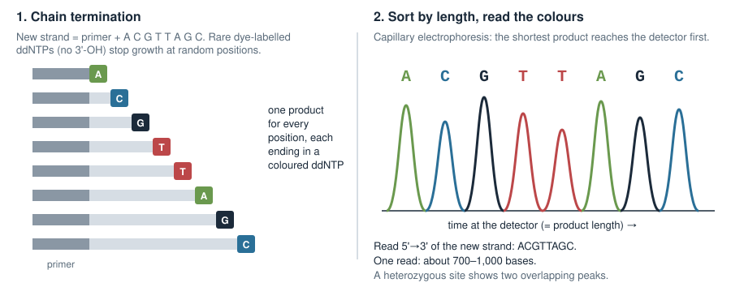
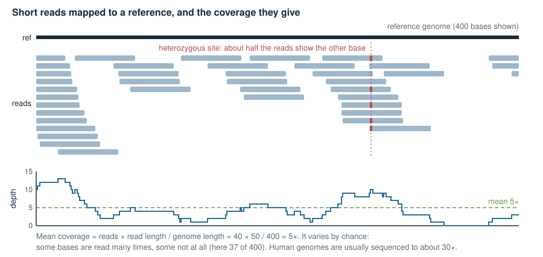

Part 4: Genome analysis. Cutting, copying and reading DNA: restriction enzymes, gels, PCR and sequencing
Basic and molecular genetics (5MO104)
About this lecture
So far we have studied genes through phenotypes: round or wrinkled, affected or not. From here on we also read the DNA itself. Four tools make that possible, and together they turn a gene into data you can store, compare and search.
Cut: restriction enzymes recognise short palindromic sites and cut there.
Sort: gel electrophoresis separates DNA fragments by size; a ladder gives the scale.
Copy: cloning in a plasmid vector (briefly), and the polymerase chain reaction (PCR), which copies one stretch of DNA a billion-fold.
Read: Sanger sequencing reads one PCR product; next-generation sequencing reads millions of short pieces at once.
The running example is the sickle-cell allele of HBB from Genetics as information: we will detect it in a family with PCR and a restriction enzyme.
Book: Hartwell, Genetics: From Genes to Genomes, chapter on digital analysis of DNA.
Cut, sort, copy, read
Tool
What it does
What it gives you
Used for
Restriction enzyme
cuts at a specific 4–8 bp site
fragments of predictable size
mapping, cloning, detecting some mutations
Gel electrophoresis
separates fragments by size
bands; size from a ladder
checking digests and PCR products
Cloning vector
carries a fragment into bacteria, which copy it
many identical copies, kept for later
libraries, protein expression, transgenics
PCR
copies the DNA between two primers
109-fold more of one region
diagnostics, genotyping, sequencing input
Sanger sequencing
reads one PCR product
~800 bases of high-quality sequence
confirming a variant
Next-generation sequencing
reads millions of short fragments
whole genomes, exomes, transcriptomes
finding variants genome-wide
The tools combine: PCR a region, cut it, run it on a gel; or PCR it and sequence it.
Restriction enzymes cut at palindromes

Bacteria make restriction enzymes to cut invading phage DNA; they protect their own DNA by methylating the same sites.
The site is usually a palindrome: the two strands read the same 5’→3’. The enzyme is a dimer and each half cuts one strand.
A staggered cut leaves sticky ends that can pair with any other end cut by the same enzyme.
How often does an enzyme cut?
If the four bases were equally common and random, a given site of n specified bases would occur once every 4n bp.
Enzyme
Site
Expected spacing
Expected in phage λ (48,502 bp)
Actual in λ
EcoRI
GAATTC
46 = 4,096 bp
11.8
5
BamHI
GGATCC
4,096 bp
11.8
5
HindIII
AAGCTT
4,096 bp
11.8
6
DdeI
CTNAG (N = any)
44 = 256 bp
189
104
6-bp cutters (“six-cutters”) give fragments of a few kb; 4-bp cutters give a few hundred bp.
Real DNA is not random, so actual counts differ from the expectation. In the R exercise you count the λ sites yourself.
Gel electrophoresis: sorting fragments by size

DNA has a negative phosphate backbone, so it moves towards the + electrode. The agarose mesh slows long molecules more.
Distance run is roughly linear in log(size) over the gel’s useful range. Use a ladder of known sizes to read off unknown bands.
Higher % agarose resolves short fragments (100–1,000 bp); lower % resolves long ones (1–20 kb).
Restriction mapping: where are the sites?
Phage λ DNA (48,502 bp, linear), digested once with each enzyme and once with both:
A linear molecule with k sites gives k + 1 fragments; a circular one gives k.
Fragments always sum to the full length: a check on your reading of the gel.
A fragment that survives the double digest unchanged (5,505; 3,530) contains no site for the other enzyme. Fragments that split show where the other sites are.
Cloning vectors (briefly)
A vector is a small DNA molecule that bacteria copy for you. The classic example is the plasmid pUC19 (2,686 bp, circular):
Part
Job
origin of replication
many copies per cell
antibiotic-resistance gene (bla, ampicillin)
only cells with the plasmid survive
multiple cloning site (MCS)
one site each for EcoRI, BamHI, HindIII, PstI, …
lacZα around the MCS
an insert disrupts it: white instead of blue colonies
Cloning in four steps
Cut vector and insert with the same enzyme(s).
Mix; sticky ends pair; ligase seals them.
TransformE. coli; select on ampicillin.
Pick a white colony, grow it, check the insert with a digest and a gel.
Today PCR has replaced cloning for most diagnostic work; cloning is still used to make proteins and transgenic organisms.
PCR: copying one region a billion times

Two primers define the product: one on each strand, 3’ ends pointing towards each other.
Each cycle: denature (~95 °C), anneal primers (~55–65 °C), extend with a heat-stable polymerase (72 °C).
Ingredients: template DNA, two primers, dNTPs, Mg2+, buffer, Taq polymerase.
Exponential amplification, efficiency and plateau
Cycles
Ideal copies from 1 template (2n)
At 90% efficiency (1.9n)
10
1,024
613
20
1.0 × 106
3.8 × 105
30
1.1 × 109
2.3 × 108
Real reactions copy a fraction E of the molecules per cycle: N = N0 (1 + E)n.
The reaction plateaus (~1012 copies in 50 µl) when primers and dNTPs run out.
qPCR measures the cycle where the product crosses a threshold (Ct). 10× more template crosses about log(10)/log(1 + E) ≈ 3.3 cycles earlier (at E = 1).
Designing primers
Rule of thumb
Why
Length 18–25 nt
long enough to be unique in a 3 × 109 bp genome (418 ≈ 7 × 1010)
GC content 40–60%
stable binding without sticking everywhere
Melting temperature (Tm) ~55–65 °C, the two primers within ~2–5 °C
both bind well at the same annealing temperature
A G or C at the 3’ end, but no run of G/C
the polymerase starts from a firmly paired 3’ end
No complementarity between or within primers, especially at 3’ ends
avoids primer-dimers and hairpins
Unique in the genome (check with Primer-BLAST)
one product, not several
Quick estimate (Wallace rule, for short primers): Tm ≈ 2 °C × (A + T) + 4 °C × (G + C).
Try it: PCR, cycle by cycle
PCR plus a restriction enzyme: genotyping HbS

The sickle-cell change (codon 7 GAG → GTG, c.20A>T) destroys a DdeI site (CTGAG → CTGTG). Amplify 500 bp around it, cut with DdeI, run a gel: AA = HbA/HbA, AS = carrier, SS = sickle-cell disease.
Try it: a virtual gel
Sanger sequencing: reading one product

A primer, a polymerase, normal dNTPs and a small amount of four dye-labelled dideoxynucleotides (ddNTPs). A ddNTP lacks the 3’-OH, so the chain stops there.
The result is a set of products ending at every position; capillary electrophoresis sorts them by length, and the dye colour of each gives the base.
Reading a Sanger trace
What you see
What it means
one clean peak per position
a single sequence: homozygous at that site, or a cloned molecule
two overlapping peaks of about half height at one position
a heterozygous SNP (two alleles in the PCR product)
everything doubles after one point
a heterozygous indel: the two alleles are shifted relative to each other
messy start (first ~30 bases) and fading end (after ~800)
normal limits of the method
An HbA/HbS carrier shows an A and a T peak together at c.20 (forward strand).
Next-generation sequencing: reads and coverage

Fragment the genome, sequence millions of short reads (typically 100–300 bases) in parallel, and map each read to a reference genome.
Coverage = number of reads × read length ÷ genome length. A human genome at 30× needs about 90 Gb of reads.
Coverage varies by chance, so a heterozygous site is called only where enough reads cover it.
Summary
Concept
Key fact
Restriction enzyme
cuts at a palindromic site; sticky or blunt ends; a 6-bp site every ~4,096 bp in random DNA
Fragments
linear: k sites → k + 1 fragments; circular: k; sizes sum to the total
Gel
distance ∝ −log(size); read sizes from a ladder; brightness ∝ mass